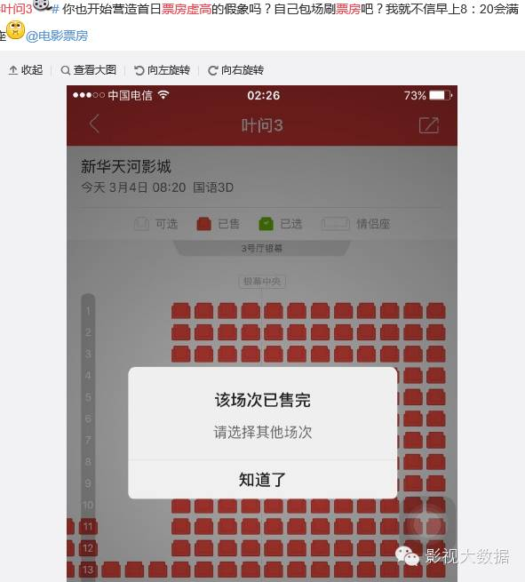
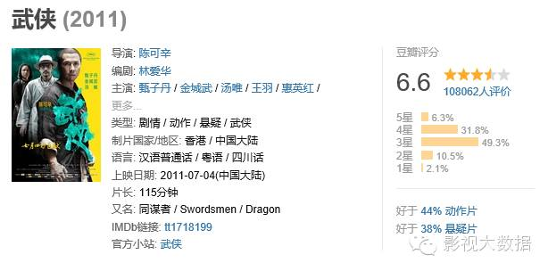

叶问3疑似票房注水？甄子丹咋办？功夫片路在何方？
《叶问3》上映了，却在票房刚刚开出令笔者意外的成绩时，被爆票房注水，真是让人无语。
上映之前的《叶问3》——本来没什么好说的电影
《叶问3》上映之前，笔者曾经认为，本片不会太差——因为同档期没有强大竞争者，可以拿到40%的排片；但也不会大爆，尤其是在社会效应与口碑方面，会是不温不火。整体就是一部没什么太多可评论的电影。
笔者本来得出以上的结论是因为，“叶问、咏春”这个前些年突然火了的IP，虽然也许确实是从叶伟信和甄子丹开始的，但因为一拍再拍，发挥空间实在不多了，只剩下惯性。
尤其是有王家卫的《一代宗师》这部口碑和票房都较为成功的先作、以及《师父》这部质量口碑上佳的作品之后，《叶问3》在主题和质量发挥上进行突破实在是技术难度很大，所以它的创作者大概无论主观意愿和客观形势上，都只能坚持自己《叶问》和《叶问2》的路线，这就使得值得讨论的余地非常的小，不会特别的好也不会特别的差，反而已经造成了该片在口碑传播上的先天不利——人们没有主观意愿去讨论一部没什么可说的电影。
《叶问3》，剧情依然是一贯的套路，叶问是个爱家爱妻的好男人，有一些找茬的反派，叶问赢了。咏春拍的像是拧得快干了的毛巾，除了泰森，别的和以前没什么区别。但是泰森，虽然很遗憾，但已经是太久以前的拳王了。这一整部电影，有什么好说的呢？也许只剩下张晋值得一说，因为他是蔡少芬皇后娘娘的老公。
“制造谈资”是现代人观影意愿的一个现象，当人们都在讨论，就有更多的人去看，以便能够加入讨论，而当人们没有意愿去讨论，就不会有更多的人去观影，所以，没什么好说的电影会造成没什么惊喜的票房。可以说，到时去观影的主流观众应该有大部分都是以前看过同系列影片的观众，新的观众不会太多，旧的观众倒有可能因为厌倦而流失。这就注定了这部片子不会出现什么奇迹了。
不过笔者本来觉得，因为它还算幸运，同档期竞争者不算强大，应该可以按部就班的获得基本票房分数，但是对于“叶问”这个IP本身来说，该电影只不过是对这个IP的又一次消耗，就像有的偶像明星在不红之前拼命压榨剩余价值一样，它起不到如《美人鱼》般给“周星驰”这个招牌再镀一层金的效果。
上映后的《叶问3》——被网友质疑为注水猪肉
但是因为票房注水的传闻，《叶问3》变得不可预料了。
票房注水是由网友们提出的，一方面是发现了如下图般在大清早爆满的场次，一方面是发现一些过去在全国电影票房中完全排不上名词的影院——例如，义乌的华夏星空国际影城等等，突然一跃成为全国电影票房排名前列的影院。

由此提出了《叶问3》大刷首日票房，首日1.5亿票房属于虚高的可能性。
在过去，《捉妖记》为了破票房纪录，也有票房注水的传闻，且被网友提出不少锤图，但那仅仅是发生在即将收尾的阶段，像《叶问3》这样，属于大片，却首日出现注水质疑，毕竟还是少数。
《叶问3》在上映首日就大篇幅推广了一篇报道文章——《电影圈掀起金融热！保底、基金和股票，资本现在这么玩》。高票房可以带来股价方面的前景。而围绕票房注水传闻，到底有多少资本博弈，也是有一定的想象空间。
《叶问3》已经变成了一部不能预料的电影。但毫无疑问的是，《叶问3》本来在笔者眼中，只是对“叶问”这个IP的又一次消耗利用；但是现在，它无论对IP本身、还是叶问这位武术大师本人，都造到了一些伤害。
甄子丹的尴尬
说过了《叶问3》，再说说尴尬的甄子丹。
甄子丹也许在香港、在东南亚市场还有一些号召力，但他在大陆市场的地位，真的是太尴尬了。在成龙、李连杰等前辈渐渐退后的时候，甄子丹终于凭借《叶问》有了自己的代表作和代表影响形象，也许对他而言，就如同当年年轻的李连杰有了黄飞鸿、方世玉。
但是很尴尬的是，李连杰演黄飞鸿方世玉的时候，香港电影的影响力如日中天，甄子丹接到叶问的时候，香港电影的影响力已经日薄西山，无论是题材还是形式，都不能再带给人太多惊喜了。所以甄子丹并没有能够在大陆电影市场制造出足够的影响力。
然而这还不是最糟糕，最糟糕的是，甄子丹似乎还没有那个讨人喜欢的命。
之前和赵文卓的冲突，连街上的路人都有所耳闻，而偏偏赵文卓的形象还特别正派，甄子丹却长了一张看着确实有点凶的脸，这件事直接导致了甄子丹的个人形象在不少年轻网民心中是颇为负面的。
其实笔者了解了一下甄子丹的背景，在美国长大，身上有种美国人的自信倒也不是不能理解，可是他似乎不惮与把这种过度自信尽情挥洒。在《叶问3》的一场媒体见面会上，他说： “第一部是我当时演叶问的状态，就是我当时自己的状态。到《叶问3》里的叶问，可能已经变成了现在的我。”其实这个回答细想想并没有太大的问题，但是乍一听，总觉得有种自信爆棚的感觉，似乎缺少了一分对“叶问”本人的尊敬。
“戏霸”传闻加上他本人性格，使得他在大陆的公众形象十分成问题，虽然细想想其实也没有亲眼所见那些传闻，但是就是不讨人喜欢，这，大概只能说是命吧。
从八卦的角度说完了，再说技术角度。
其实甄子丹相比于周星驰的尴尬，除了个人因素，也是香港电影演员和香港制作目前的市场欢迎度的体现。
甄子丹仅仅是一个人，展示的是香港功夫演员的形象，可调整的灵活空间很小；而周星驰却带领着一个电影制作班子。所以甄子丹改变不了自己的形象，而周星驰却可以不断微调自己，与内地市场结合，这也是为什么一个人处境尴尬，另一个还活得很好的原因了。
对甄子丹来说，香港功夫电影红火的时候，他演不到主角，香港功夫电影没落后，他演到主角也改变不了个人形象，改变不了个人形象就会缺少商业价值，也缺少功夫片以外的机会。虽然他可能也过得很好，好过所有一般平民百姓很多，但是对于一个应该挺有野心的人来说，遗憾一定也不少。本来因叶问而上位，末了却摊上注水的《叶问3》，这也许正是一种纯功夫港片末路的暗示。
功夫片还能走向何方
“叶问”IP的价值一再挖掘总有挖尽的一天，功夫巨星的影响力也渐渐下滑，不谈票房注水的那些资本的恶意，仅仅说功夫片本身，它的未来在何方？
中国人不可能也不应该放弃功夫片。
事实上在过去的某一个阶段里，香港功夫电影是自成一个类型的，功夫作为一个华人的招牌甚至一度打入好莱坞，至今也依然是中国文化的不可或缺的一部分。
然而，现在的问题是，一切事物都会老，观众看得太多已经觉得有些了无新意了。
“新意”这个东西，在近些年的市场中显得尤其重要。
可能有人要反对了，“情怀”明明卖的那么好，为什么功夫片不行？
笔者这时候又要大放个人观点了。
《大圣归来》卖得好，是因为旧情怀装了中国动画电影业的新技术；
《美人鱼》卖得好，是因为周星驰也在努力表达与时俱进的价值观；
大众看《我是歌手》，不是想看韩磊、韩红、李玟等大哥大姐唱与十年前一模一样的唱法和编曲，而是等着看他们亮了手旧日绝活之后，还能拿出什么以前没见过的东西。
而拿不出足够“新”的东西，只靠旧内容贩售的影视内容，它的受众终究是过去的那一部分惯性观众，并不能为更大规模的市场完全接受。
那么，功夫片，到底能不能引入一些新东西呢？
其实提到功夫片的创新，笔者会情不自禁的想到陈可辛2011年拍摄的《武侠》，很巧合，也有甄子丹的主演。那部电影中，陈可辛就在试图用科学的手法结构功夫，拍出了一种时代感，关于神经传导、血液流动等等一般在美剧里才看到的画面，那部电影里倒是常常出现。那部电影对于陈可辛来说，是不成功的作品，因为它的总票房和陈可辛其它大卖电影来说，1.7亿甚至算不上多么成功。笔者甚至在某次访问中，听到陈可辛说，因为《武侠》，他当时受到了许多来自投资商的质疑。

但是笔者大胆肯定，那部电影仅仅是生不逢时。
其实那部电影很符合当今年轻人的口味，只是在当时的市场显得稍微超前了。如果它放在今天上映，笔者断定它一定能有4倍以上的票房。
事实上《武侠》在豆瓣6.6的评分并不低，说明年轻人的接受度是可以的，只是当时的电影票房，还不像今天一样受讨论度的影响，而当时的市场，还不像今天一样渴求新鲜血液。
笔者最近听说，徐克有意要拍一部《奇门遁甲》，而徐老怪的立意，就是要用较为“科学”的方法去解构中国古代的奇门遁甲，这个想法听起来何其熟悉。虽然拍摄还仅仅在前期阶段，但笔者已经愿意为这部电影压宝成功。可见陈可辛当年未受肯定的想法，后来者觉得合适时，还是会拾起来。
一时的不够成功，一时的可能大获成功，这不能不说，是和观众的心理变化、和与当今的中国社会氛围密不可分。
有时候笔者觉得，中国人是个很讲究“承上启下”的民族，对老人家、旧习俗固然会保持习惯性的尊敬，但却更多的对新事物、新学问又有止不住的好奇，绝不会停留在原地。
这也许是因为中国人骨子里有种“上进”的势头，没有人不想要更好的生活，而好的生活就需要适应当下与时俱进，所以都想要跟紧时代的步伐，以至于任何能给人带来“新”的感觉的东西，都会在中国人，尤其是那些因为互联网的广泛使用、而眼界大开的年轻人中大受欢迎，这就使得影视娱乐的商业化的取向变得非常明白，那些能够让人耳目一新自觉跟上了时代脉搏的东西，就会更加的吸引年轻人的目光。而当年轻人成为消费能力足够大的主流市场时，仅仅几年的功夫，市场改变了。
可以确定的说，死守传统已经不是当前中国市场的需求，因为大家都能看到、也想看到门外的世界。功夫片、武侠片照着旧的一套拍，大概只能如《剑雨》那样，十分传统却不卖座；或者如《叶问3》一样，中规中矩交个成绩单。
旧与新的连接，也许如陈可辛的《武侠》一样的探索，恐怕才是正确而必然的出路。
本文仅代表作者研讨性观点，不代表影视大数据立场，对《叶问3》的看法，欢迎大家留言